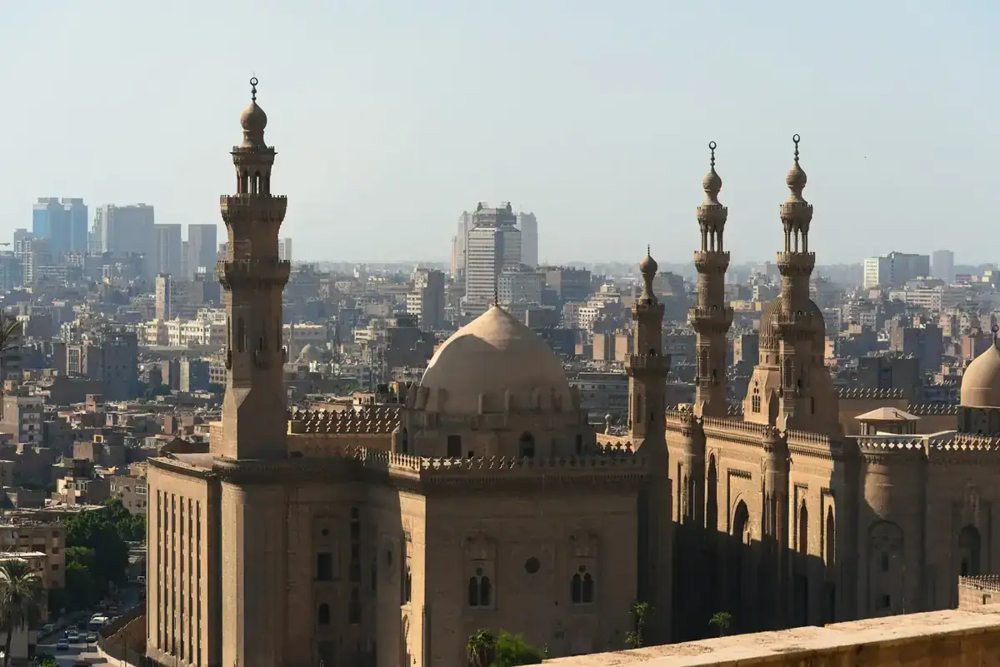
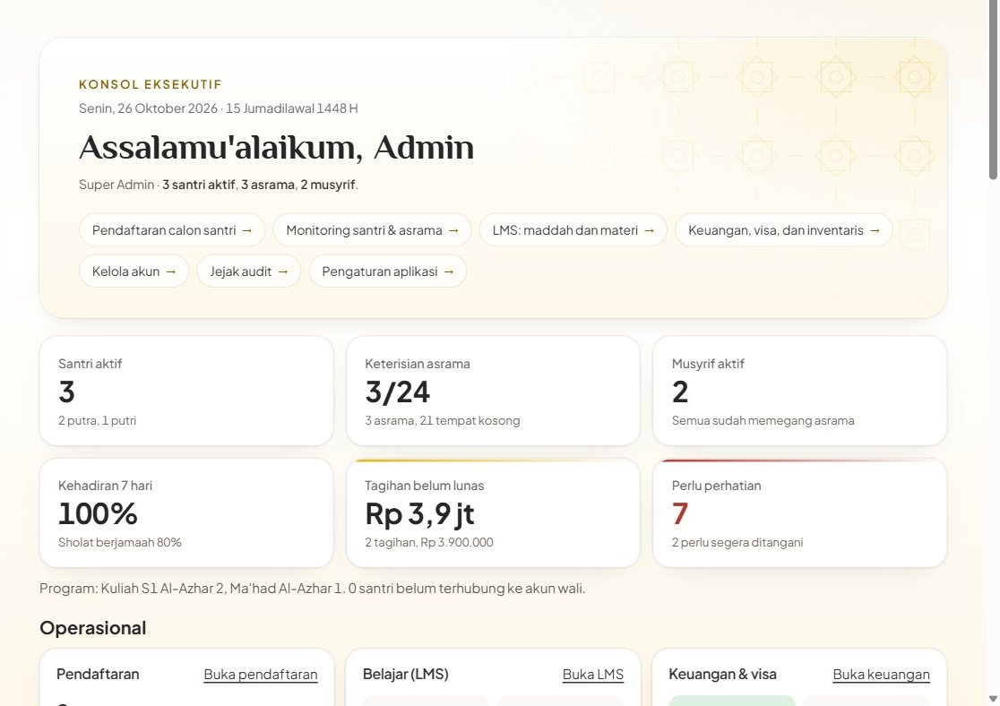
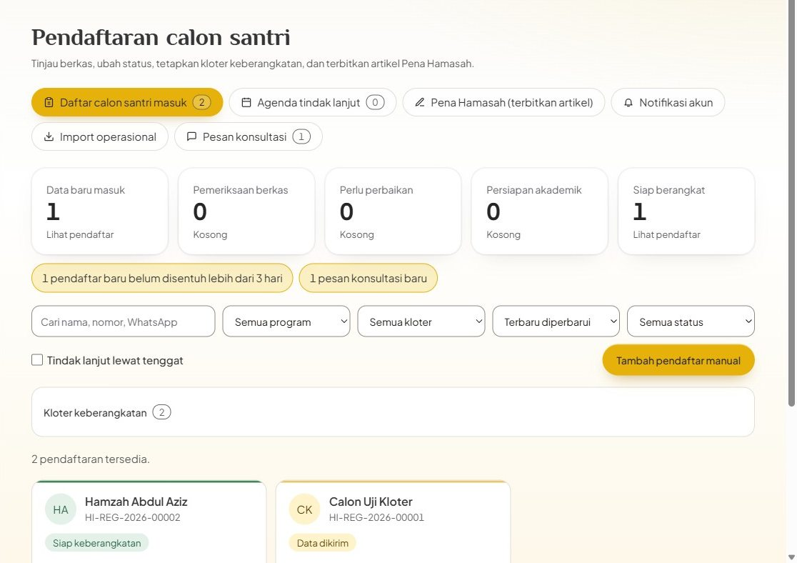
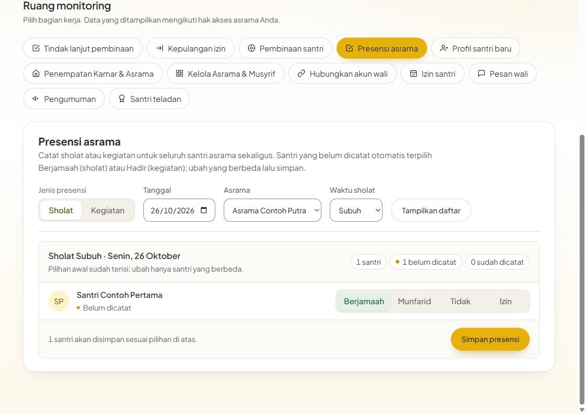
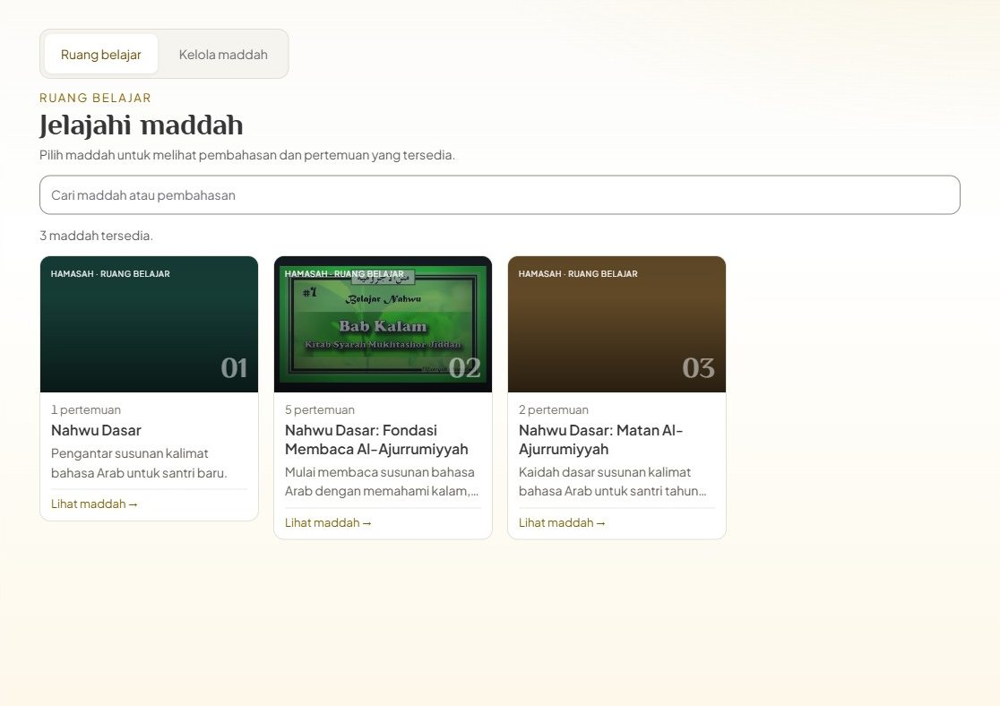
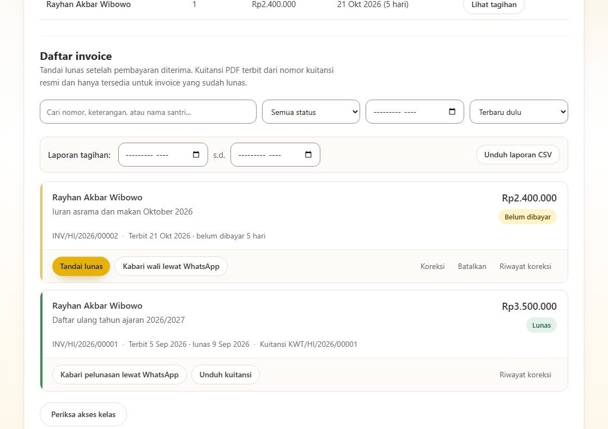
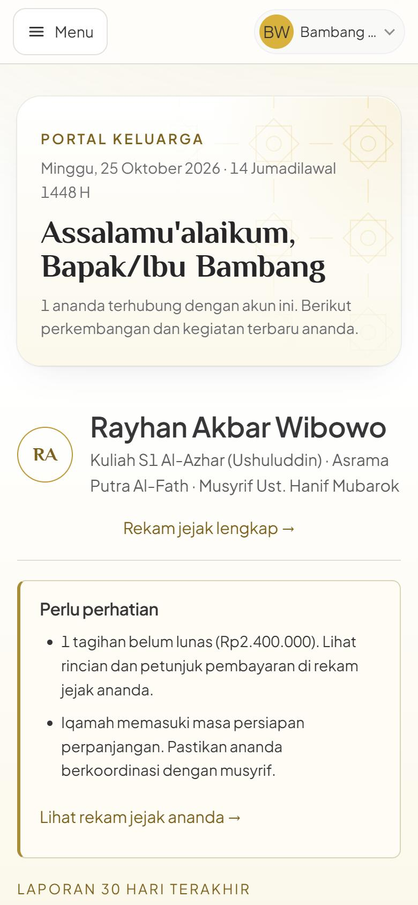
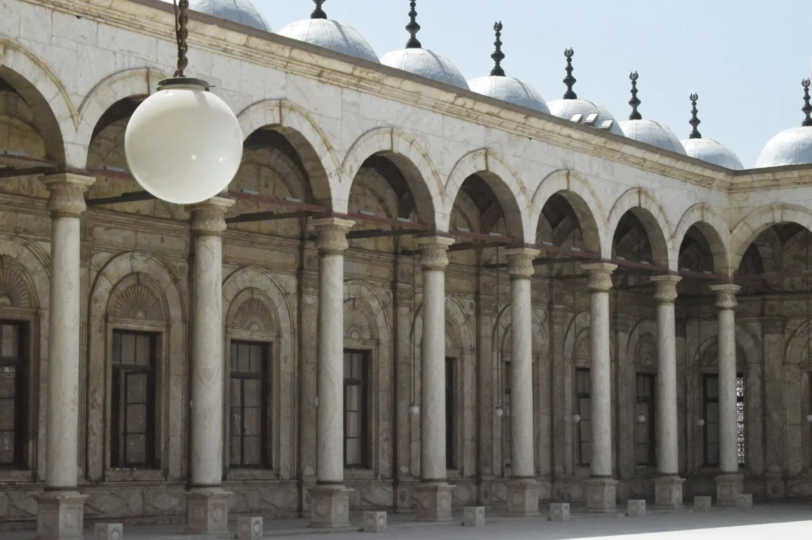

Portal kerja untuk Qohiroh Center
Pendaftaran, asrama, kelas, keuangan, dan kabar untuk wali, di satu tempat.


Setiap orang melihat layarnya sendiri
Pilih satu peran.





Satu catatan, dilihat oleh yang berhak
Wali, pembina, guru, dan keuangan membuka data yang sama, sesuai perannya.
- Akses sesuai peran
- Wali dan santri hanya membuka data yang terhubung ke akunnya.
- Kata sandi
- Disimpan dalam bentuk acak, bukan apa adanya.
- Dokumen
- Paspor dan ijazah disimpan di penyimpanan privat.
- Riwayat
- Koreksi dan pembatalan tercatat: siapa, dan kapan.
Pilih bagian yang dibutuhkan
Tidak semua harus dipakai sekaligus. Saya susun sesuai kebutuhan Qohiroh Center.
- Pendaftaran
- Formulir online, pemeriksaan berkas, kloter keberangkatan, dan halaman cek status untuk pendaftar.
- Asrama
- Kamar, jadwal, piket, uang kas, absen sholat, dan catatan pembinaan.
- Kelas online
- Video pertemuan, modul PDF, kuis, tugas, dan asisten belajar.
- Keuangan
- Tagihan, kuitansi PDF, tunggakan, visa dan paspor, serta inventaris.
- Portal wali
- Rekam jejak ananda, rapor PDF, tagihan, dan kiriman doa.
- Isi website
- Program, biaya, dan artikel yang bisa diubah tanpa programmer.
Dari obrolan sampai dipakai
- Mendengar kebutuhanUrusan mana yang paling menyita waktu sekarang.
- MenyesuaikanIstilah, peran, dan tampilan; data awal dimasukkan.
- Uji cobaTiap peran dicoba oleh orang yang nanti memakainya.
- Mulai dipakaiBertahap, dari satu bagian dulu.
Biaya dibahas setelah kebutuhan jelas
Halaman ini tidak memuat angka, karena hitungannya mengikuti bagian yang dipilih.
- Membangun
- Sekali, sesuai bagian yang dipilih dan seberapa banyak yang perlu disesuaikan.
- Berjalan
- Domain, hosting, dan pemakaian AI. Pemakaian AI dibatasi per jam dan per hari.
- Kepemilikan
- Siapa memegang kode dan data ditetapkan tertulis di awal.
- Dukungan
- Masa perbaikan setelah mulai dipakai disepakati bersama.
Mulai dari obrolan singkat
Ceritakan urusan yang paling ingin dirapikan, lalu saya tunjukkan caranya.
Balas pesan yang mengantar halaman ini untuk menjadwalkan obrolan.
